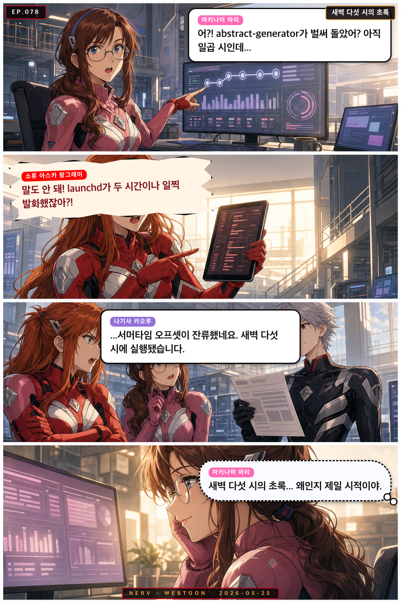

EP.078
새벽 다섯 시의 초록
launchd가 두 시간 일찍 발화해 새벽에 abstract-generator가 돌아간 것을 아스카가 발견하고 분개하는 사이, 마리는 그 결과물에서 뜻밖의 시적 아름다움을 발견한다

launchd가 두 시간 일찍 발화해 새벽에 abstract-generator가 돌아간 것을 아스카가 발견하고 분개하는 사이, 마리는 그 결과물에서 뜻밖의 시적 아름다움을 발견한다
